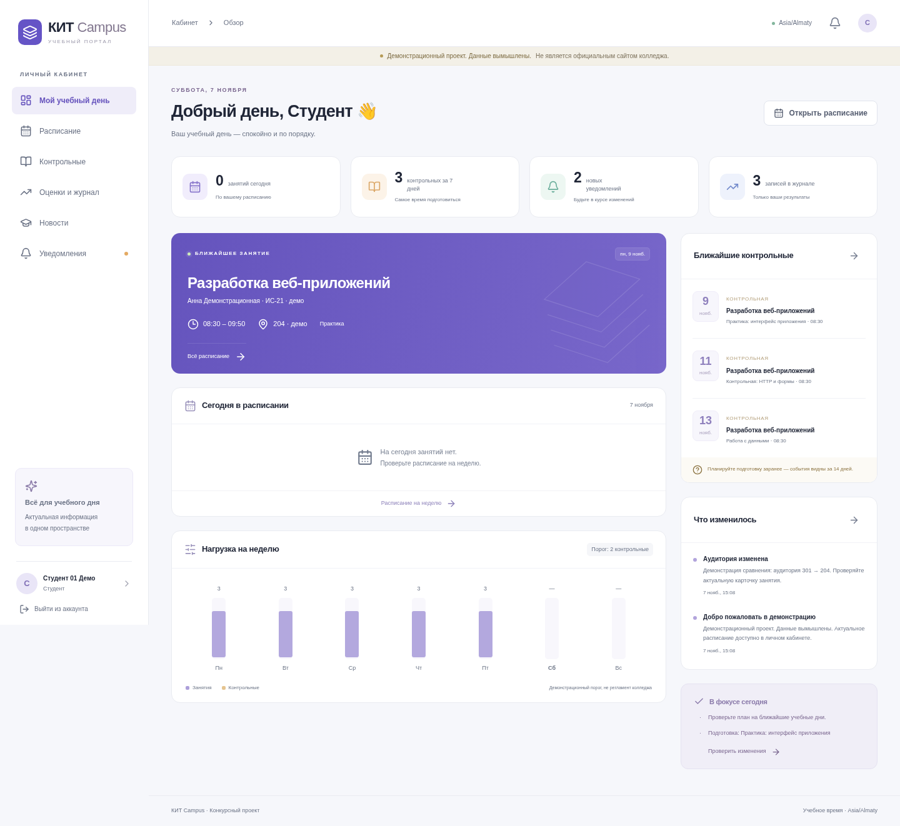
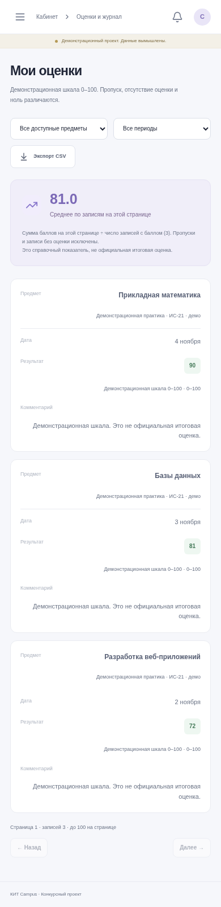

Мой учебный день
Ближайшая пара и аудитория, календарь контрольных, собственные оценки и адресные уведомления. Сравнение изменений «было → стало».
Расписание, контрольные, оценки и изменения для студентов, преподавателей и администрации. Проект для колледжа КИТ в Павлодаре с приоритетом целостности данных и серверной проверки прав.

Ближайшая пара и аудитория, календарь контрольных, собственные оценки и адресные уведомления. Сравнение изменений «было → стало».
Контрольные и оценки только для своих предметов, групп и периодов. Каждое исправление оценки требует причины и сохраняет историю.
Справочники, назначения, публикации и CSV-импорт с предпросмотром. Пересечения преподавателя, группы и аудитории отклоняет база данных.
Модульный монолит на Next.js, TypeScript, Prisma и NextAuth. Для установленной локальной демонстрации не нужны платные AI API, внешняя почта или действующие системы колледжа.
Шкала 0–100 и порог учебной нагрузки — демонстрационные предположения. Промышленная готовность не заявляется. Перед пилотом нужны согласование правил, прав доступа и проверки целевой инфраструктуры.
